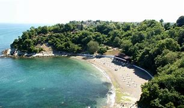
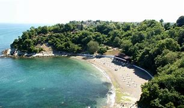
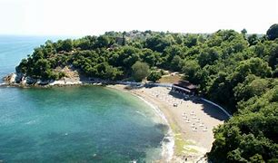
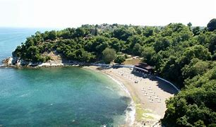

Düzce, Türkiye'nin Karadeniz Bölgesi'nde yer alır ve doğal güzellikleriyle ünlüdür. Şehir, yeşil doğası ve birçok şelalesiyle dikkat çeker.
Düzce’nin bilinen tarihi M.Ö. 1390 yıllarına kadar gitmektedir. Yöre, birçok kavimin ve devletin istilasına maruz kalmıştır...